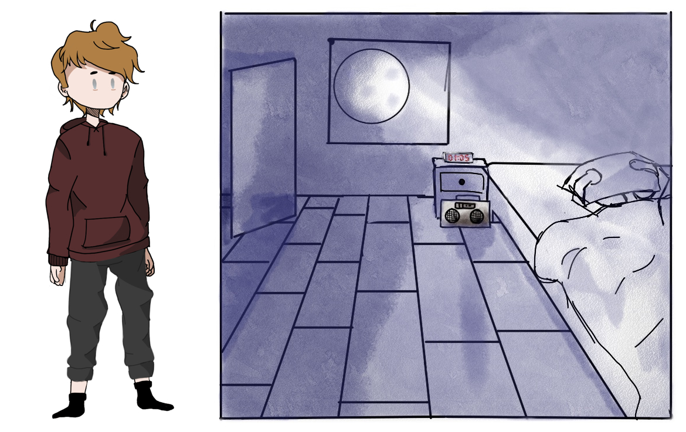
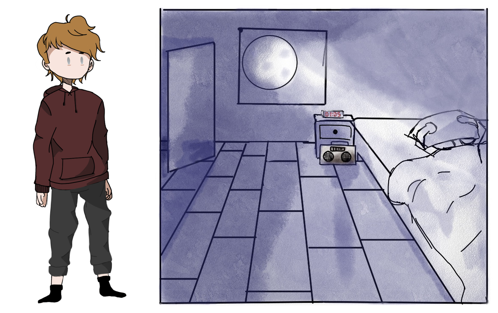

Im Spiegel - 2D/3D Animation
3D・Video・Februar 2022
Im Video wird die Kurzgeschichte "Im Spiegel" von Margret Steenfatt adaptiert. Die Geschichte wird durch die Kombination von 2D- und 3D-Elementen dargestellt.
▶ Entstehung
Es entstand im Deutschunterricht der E-Phase zum Thema "Kurzgeschichten" am Gymnasium Horn. Wir waren eine 3er Gruppe und die Zeichnungs-Basen, mit denen ich dann weitergearbeitet habe, waren von Emily und Max.
▶ Erfahrung
Der Mix zwischen 2D & 3D Animation war mir neu und auch mit Zeichnungen im 3-dimensionalen Raum zu arbeiten & animieren. Erster Kontakt mit dem “Grease Pencil” Tool von Blender.
 Erster Einblick in den Raum in 3D.
Eines der 2D Bilder bevor es in 3D übertragen wird.

Erste Skizzen von Max.
Erster Einblick in den Raum in 3D.
Eines der 2D Bilder bevor es in 3D übertragen wird.

Erste Skizzen von Max.
 Storyboard Ideen, skizziert von Emily.
Storyboard Ideen, skizziert von Emily.